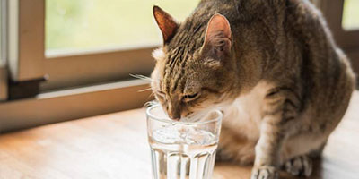
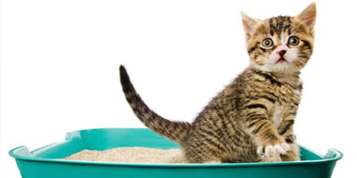
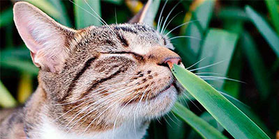

REVISIONES SEMANALES DE TU GATO
Publicado 8 de Junio, 2021
Al igual que el cepillado de su pelaje y el cuidado de sus uñas, hay algunas comprobaciones adicionales que puedes hacer para asegurarte de que tu minino está en perfectas condiciones.
Comprueba que las orejas de tu gato estén limpias y huelan bien. Si están sucias, huelen mal, están rojas, irritadas, o si tu gato no para de sacudir la cabeza, contacta con tu veterinario. Los ácaros en los oídos son un problema común, sobre todo en gatos jóvenes.
Pasa las manos por todo el cuerpo de tu gato. Busca cualquier rasguño, bulto, golpe o granito que parezca molestarle. Si estás preocupado por algo, ponte en contacto con tu veterinario.
Comprueba sus ojos, su nariz, y contacta con tu veterinario si notas alguna secreción o enrojecimiento.
LA ALIMENTACIÓN:
Es necesario que desde gatitos acostumbremos a estos peludos a cambiar de sabores y texturas para que sea sencillo poder variar su dieta cuando sea necesario. Además es importante que ésta contenga un alto porcentaje de proteínas, ya que ellos en libertad comerían pequeños mamíferos y aves.
EL ARENERO:
Los gatos son muy limpios. Por esto el arenero debe ser grande, descubierto y limpiarse a diario. La arena debe ser confortable y el número de areneros 1 o 2 por cada gato. Orinar fuera de la bandeja puede indicar que algo en el arenero o en nuestro felino no va bien. Muchas veces es estrés, recuerda: ¡los gatos no son vengativos!
¿GATO O PLANTAS?:
Los gatos en el exterior ingieren diariamente hierba que facilitan su tránsito. En casa sustituye esta hierba por plantas, y muchas de ellas son tóxicas para ellos. Debemos proporcionar a nuestro gato hierba gatera y colocarla lejos del resto de plantas.
EL AGUA:
Los gatos no son grandes bebedores. Esto puede conllevar a problemas en las vías urinarias. Es por ello que debemos fomentar su ingesta de agua. Podemos conseguirlo colocando fuentes de agua para captar su atención. Varios puntos de agua limpia y fresca en la vivienda.